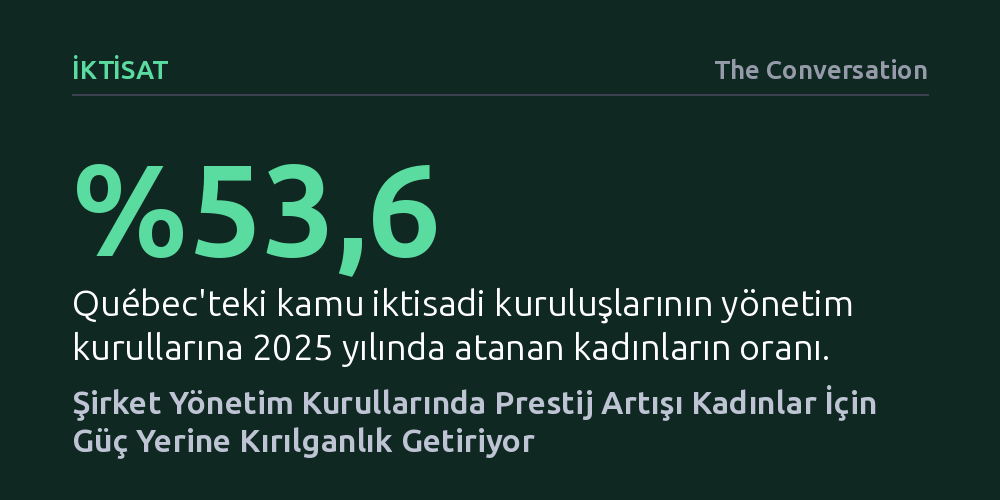

IKTISAT · The Conversation · 2026-09-09
FTSE-100 şirketlerini inceleyen araştırma, yönetim kurullarındaki prestijin erkeklerin kariyerini hızlandırırken kadınlarda kalıcı güce veya yeni üyeliklere dönüşmediğini gösteriyor. Kadınlar karar mekanizmalarına erişmek yerine aşırı görünürlük, yoğun denetim ve sembolik rollerle sınırlandırılıyor.
Şirket yönetim kurullarında kadın temsilini artırmanın tek başına eşitlik sağlamadığını; kurumsal prestijin kadınlara gerçek yetki yerine kırılgan bir statü yüklediğini göstererek kota odaklı bakışı kökten değiştiriyor.

Son yıllarda kurumsal dünyada çeşitlilik, eşitlik ve kapsayıcılık politikalarının güç kazanmasıyla birlikte kadınlar yönetim kurullarında daha fazla koltuk edinmeye başladı. Özellikle küresel ölçekte tanınan dev şirketlerin yönetim kurullarına atanmak, dışarıdan bakıldığında kadın liderler adına büyük bir prestij ve kariyer sıçraması gibi algılanıyor. Ancak Londra Borsası'nın en büyük 100 şirketini (FTSE-100) mercek altına alan güncel bir çalışma, tablonun sanılandan çok farklı işlediğini ortaya koyuyor.
Araştırmacılar, prestijli kurumlarda görev almanın kadınların ve erkeklerin sonraki kariyerlerine nasıl yansıdığını incelediğinde çarpıcı bir asimetriyle karşılaştı. Erkek üyeler için prestijli bir kurulda oturmak kariyeri hızlandıran güçlü bir kaldıraç işlevi görüyor; bu isimler mevcut üyelikleri sayesinde kolaylıkla yeni yönetim kurulu koltukları elde edebiliyor. Kadınlar ise önde gelen şirketlerin yönetim kurullarına yeni katılım sağlasalar da, bu ilk görev sonrasında benzer fırsatları yakalamakta zorlanıyor.
Çalışmanın en şaşırtıcı bulgusu, kadınların başlangıçta elde ettiği bu avantajın zaman içinde zayıflaması ve hatta atandıkları kurul sayısı arttıkça paradoksal biçimde gerilemesi oldu. Prestij, erkek profesyoneller için kalıcı fırsatların kapısını aralayan bir ivme kaynağıyken, kadınlar için sürdürülebilir bir güç ağına dönüşmüyor.
Yönetim kurullarına giren kadınların karşılaştığı bu tıkanmanın temelinde, beraberinde gelen aşırı görünürlük ve kamusal baskı yer alıyor. Prestijli bir şirketin yönetiminde yer alan kadın yöneticiler; kamuoyu, hissedarlar ve medya tarafından erkek mevkidaşlarına kıyasla çok daha sıkı bir gözetim altında tutuluyor. Russell Reynolds Associates tarafından hazırlanan raporun da ortaya koyduğu gibi, bu keskin mercek altında en küçük bir operasyonel hata dahi kadın liderler için ağır itibar kayıplarına yol açabiliyor.
Şirketlerin yaşadığı ciddi krizler ya da yapısal problemler, çoğu zaman orantısız biçimde kadın yöneticilerin sorumluluğuymuş gibi yansıtılıyor. Kurumun yaşadığı sarsıntılar doğrudan kadın üyenin kişisel itibarına fatura edildiğinde, görünürlük bir koruma kalkanı olmaktan çıkıp risk faktörüne dönüşüyor. Bu durum, hata payının neredeyse sıfırlandığı ve her adımın temkinle atılmasını zorunlu kılan yıpratıcı bir psikolojik zemin yaratıyor.
Buna ek olarak şirketler, kadın yönetim kurulu üyelerine gayriresmî sorumluluklar yükleme eğiliminde oluyor. Kadınlardan temsil heyetlerinde yer almaları, genç çalışanlara mentorluk yapmaları ve çeşitlilik inisiyatiflerini sırtlamaları bekleniyor. Bir de 'rol model olma' zorunluluğu eklendiğinde, resmî kariyer basamaklarında karşılığı olmayan ağır bir iş yükü oluşuyor. Tüm bu görünmeyen yükler, kadınların yeni yönetim kurulu tekliflerini değerlendirirken tereddüt etmelerine ya da tekliflerden uzak durmalarına neden oluyor.
Sorunun kuramsal köklerine inildiğinde, güç ile statü arasındaki temel ayrım belirleyici hale geliyor. Dünyanın en güçlü liderlerinin algılanış biçimini inceleyen araştırmalar, erkeklerin gücünün eylem, kontrol ve doğrudan otoriteyle ilişkilendirildiğini gösteriyor. Buna karşılık kadınların elindeki güç, daha ziyade statüyle; yani başkalarının onlara atfettiği sosyal saygınlık ve sembolik değerle tanımlanıyor.
Bu ayrım kritik bir kırılganlığı beraberinde getiriyor: Güç, resmî kurumsal mekanizmalara ve kaynak kontrolüne dayandığı için dayanıklıdır; statü ise tamamen toplumsal algıya ve başkalarının yargılarına bağlı olduğundan kolayca yitirilebilir. Yüksek statülü olarak görülen kişilere yönelik davranışsal beklentiler çok daha katıdır; bu kişilerden sürekli olarak adil, empatik ve sıcak kanlı olmaları beklenir.
Sonuç olarak kadınlar yönetim kurullarında sembolik düzeyde el üstünde tutulup övgü toplarken, kararları fiilen yönlendiren somut güç araçlarından ve karar alma kaldıraçlarından uzak tutuluyor. Şirketler kadınlara prestij veriyor ancak bu prestij, bütçeyi yönetme, stratejik yön tayin etme veya kurumsal atamalara hükmetme gücünü içermiyor.
Bugün gelinen noktada kadın yöneticiler klasik 'cam tavan' engelini aşmış gibi görünse de, kendilerini dışarıdan zirvede görünen fakat içeride hareket alanı bulunmayan bir 'cam balon' içinde hapsedilmiş buluyorlar. Kanada merkezli şirketlerde yapılan araştırmalar, kadınların üst düzey görevlere gelme ivmesinin son dönemde yavaşladığını gösteriyor. Kurumlara giriş kapıları çeşitlilik politikaları sayesinde genişlemiş olsa da, içeride sürdürülebilir ve adil bir kariyer ilerlemesini sağlayacak mekanizmalar aynı hızda gelişmedi.
Québec kamu şirketlerindeki cinsiyet dengesi hedefleri, kadın temsilinin yüzde 50 eşiğini aşabileceğini kanıtladı. Ancak kamu şirketlerinde sağlanan bu sayısal eşitlik dahi, nüfuz ve karar alma gücünün kendiliğinden eşitlendiği anlamına gelmiyor. Özel sektörde ise kota zorlamalarının kabul görme şansının düşüklüğü ve ABD merkezli çeşitlilik politikalarındaki geri adımların piyasalara sirayet etmesi, meseleye salt sayı odaklı yaklaşılamayacağını açıkça gösteriyor.
Gerçek bir eşitlik için şirketlerin sadece kaç kadına koltuk verdiklerini değil, bu temsilin niteliğini ve etkisini de şeffaf biçimde açıklamaları gerekiyor. Kadınların kurullara katılımının şirket dinamiklerini zenginleştirdiği bilinse de, sembolik övgüler gerçek karar yetkisine dönüşmedikçe eşitsizlik biçim değiştirerek varlığını koruyacaktır.